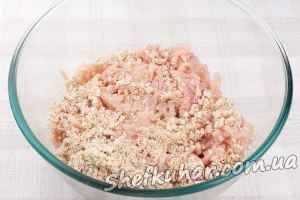

Террін з куркою
Інгредієнти: Куряче філе 650 г Цибуля 1 шт. Часник 3 зубчика Горіхи кедрові 3 ст. л. Батон з висівками 0.5 шт. Маслинова олія 3 ст. л. Базилік зелений свіжий 1 пучок Петрушка свіжа 0.5 пучок Перець чорний мелений Яйця курячі 1 шт. Сіль.
Кулінарний рецепт терріну з куркою
Для приготування страви знадобиться куряче філе, половина несвіжого багета з висівками, цибуля, зелень, кедрові горішки і спеції.
Цибулю порізати тонкими півкільцями, а часник пластинами.
Розігріти 2-3 ст. л. оливкової олії та обсмажити цибулю з часником пару хвилин.
Потім додати горішки і потримати все разом ще 2-3 хвилини, важливо щоб горіхи несильно зарум'янилися.
На м'ясорубці перекрутити куряче філе і багет.

Петрушку і базилік добре промити, обсушити і дрібно порізати.
До фаршу додати яйце, зелень, обсмажену цибулю з горішками, дрібку солі і чорного меленого перцю.
Добре все перемішати.
Застелити форму фольгою і рівномірно розподілити фарш.
Випікати в духовці розігрітій до 180 ° С - 45-50 хвилин.